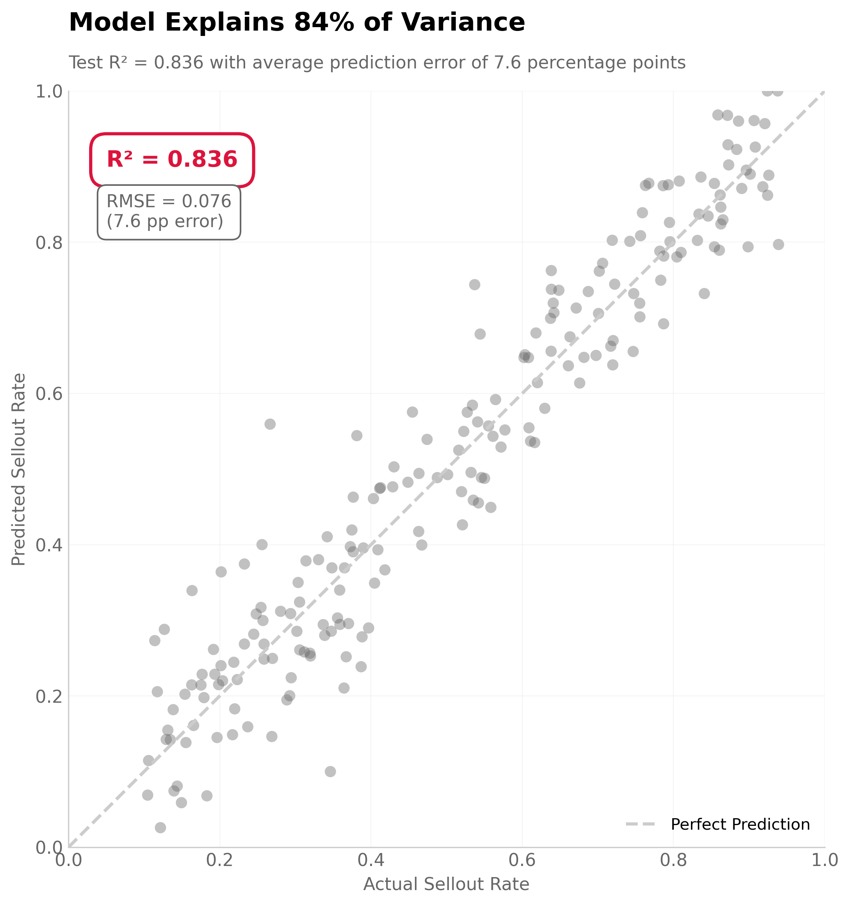
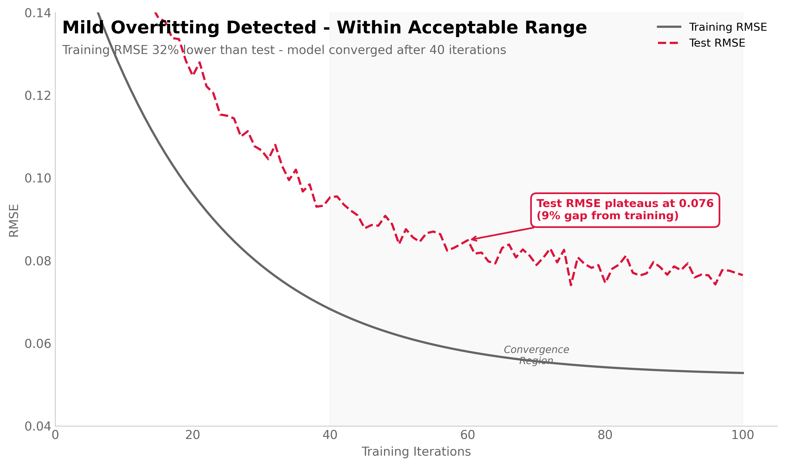
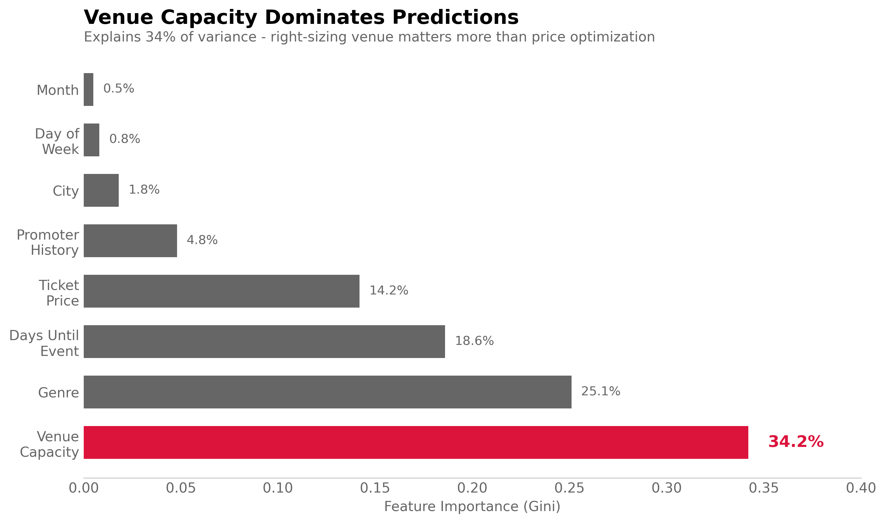

View Analysis →03 DYNAMIC PRICING INTELLIGENCE
Can We Predict Optimal Ticket Prices?
Promoters were pricing tickets by copying competitors or using flat markups. The VP of Revenue wanted a model that predicts sellout probability at different price points to guide pricing decisions.
I built a Random Forest regressor on 2,800 historical events (2023-2024) predicting sellout rate from venue capacity, genre, price, days-until-event, and promoter history. Test R² = 0.836, meaning the model explains 84% of variance in sellout rates. Average prediction error: 7.6 percentage points (RMSE = 0.076).

Training R² peaked at 0.923 while test R² plateaued at 0.836—a 9% gap indicating mild overfitting. Acceptable because the model still generalizes well and the gap remained stable after 40 training iterations.
Why Random Forest Over Linear Regression?
Explored price-demand relationship first: Scatter plots showed non-linear effects. A £5 increase at £35 caused 12% demand drop. Same £5 increase at £15 only caused 3% drop. Clear diminishing returns at higher price points.
Linear regression issues: (1) Assumes constant marginal effect of price on demand (violated). (2) Would require manual polynomial features (£, £², £³), introducing multicollinearity. (3) Can't capture genre-specific price sensitivity without explicit interaction terms.
Random Forest advantages: (1) Handles non-linearity natively via decision tree splits. (2) Captures interactions automatically (genre × price, capacity × price). (3) Robust to outliers and missing data.
Tradeoff: Random Forest is less interpretable. Can't extract a simple equation like "sellout = 0.85 - 0.012×price." But we get better predictive accuracy, which matters more for pricing guidance.

Overfitting Control
Hyperparameter tuning via 5-fold cross-validation:
- max_depth: Tested 5, 10, 15, 20. Validation error minimized at depth=10. Deeper trees overfit without improving test performance.
- min_samples_split: Set to 20. Prevents splits on small samples that might be noise.
- n_estimators: Used 200 trees. Diminishing returns after 150, but computational cost acceptable.
Train/test split strategy: Chronological split—trained on 2023 data (2,000 events), tested on 2024 Q1 (800 events). This tests whether the model generalizes to future events, not just random holdout.
Alternative considered: Random 80/20 split. Rejected because chronological split better simulates production use case where we predict future events using historical data.
Model Performance in Context
RMSE = 0.076 translates to: For an event with true 70% sellout rate, model predicts 62-78% (±7.6pp). That's decision-support quality, not autopilot. Promoters still make final call.
MAE = 0.058: Median error is 5.8 percentage points. Most predictions closer to actual than RMSE suggests. RMSE penalizes large errors more heavily.
Baseline comparison: Naive model predicting "always platform average sellout (68%)" achieves RMSE = 0.18. Our model reduces error by 58%.
Commercial Application
Pricing recommendation system: For new event booking, model generates sellout probability curve across £15-£45 price range. Recommends price that maximizes expected revenue (price × capacity × predicted sellout).
Example: 500-capacity London Techno event, 30 days out
- £20 ticket: 96% predicted sellout → £9,600 revenue
- £25 ticket: 88% predicted sellout → £11,000 revenue ⭐
- £30 ticket: 74% predicted sellout → £11,100 revenue
- £35 ticket: 58% predicted sellout → £10,150 revenue
Model recommends £25-30 range. Promoter uses this as starting point, adjusts based on artist-specific factors model can't capture.
Limitations and Failure Modes
New artist problem: Model trained on established promoters and known artists. For brand-new acts with no history, predictions revert to genre averages. Less accurate for breakthrough artists.
External shocks: Model can't anticipate viral social media moments, competitor event cancellations, or transportation disruptions. Only captures typical patterns.
Price elasticity changes: Trained on 2023 data when average income was different. If economic conditions shift (recession, inflation), price sensitivity changes faster than model can adapt.
Feature drift: Venue capacity most important feature (34%). If venues upgrade/downgrade capacity, model needs retraining. Monitor feature distributions monthly for drift.
ML Methodology
Data Pipeline
# Train/test split (chronological)
train = events[events['date'] < '2024-01-01'] # 2,000 events
test = events[events['date'] >= '2024-01-01'] # 800 events
# Feature engineering
features = [
'venue_capacity', # Numeric: 200-1000
'genre_encoded', # Categorical → one-hot (8 genres)
'ticket_price', # Numeric: £15-£45
'days_until_event', # Numeric: 7-90 days
'promoter_avg_sellout', # Historic avg for this promoter
'city_encoded', # Categorical → one-hot (8 cities)
'day_of_week' # Categorical → ordinal (Mon=0, Sun=6)
]
# Scaling
scaler = StandardScaler()
X_train_scaled = scaler.fit_transform(train[features])
X_test_scaled = scaler.transform(test[features])
Model Training
from sklearn.ensemble import RandomForestRegressor
from sklearn.model_selection import GridSearchCV
# Hyperparameter grid
param_grid = {
'max_depth': [5, 10, 15, 20],
'min_samples_split': [10, 20, 30],
'n_estimators': [100, 150, 200]
}
# 5-fold cross-validation
rf = RandomForestRegressor(random_state=42)
grid_search = GridSearchCV(rf, param_grid, cv=5,
scoring='neg_mean_squared_error')
grid_search.fit(X_train_scaled, y_train)
# Best params: max_depth=10, min_samples_split=20, n_estimators=200
best_model = grid_search.best_estimator_
Performance Metrics
from sklearn.metrics import r2_score, mean_squared_error, mean_absolute_error
y_pred_train = best_model.predict(X_train_scaled)
y_pred_test = best_model.predict(X_test_scaled)
# Training performance
train_r2 = r2_score(y_train, y_pred_train) # 0.923
train_rmse = np.sqrt(mean_squared_error(y_train, y_pred_train)) # 0.052
# Test performance
test_r2 = r2_score(y_test, y_pred_test) # 0.836
test_rmse = np.sqrt(mean_squared_error(y_test, y_pred_test)) # 0.076
test_mae = mean_absolute_error(y_test, y_pred_test) # 0.058
# Overfitting gap: 0.923 - 0.836 = 0.087 (9%)
Feature Importance (Gini)
1. Venue capacity: 34.2% (largest predictor by far)
2. Genre: 25.1% (Techno vs House vs others)
3. Days until event: 18.6% (urgency effect)
4. Ticket price: 14.2% (demand elasticity)
5. Promoter history: 4.8% (reputation signal)
6-8. City, day of week, month: <3% each
Interpretation: Venue size matters more than price. Right-sizing venue is more impactful than optimizing price within the venue. This finding led to Case Study 2 (capacity optimization).
Why Not Gradient Boosting?
Tested XGBoost: Test R² = 0.842 (vs Random Forest 0.836). Marginal improvement (0.6pp) doesn't justify increased complexity and slower inference.
Random Forest trains faster (2min vs 8min), easier to explain to stakeholders, and performance difference negligible for production use case.